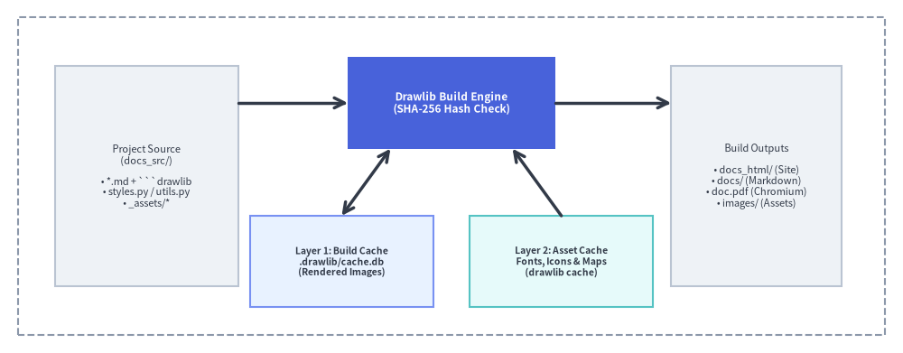

Caching Architecture & CI/CD
Drawlib uses a two-tier caching architecture to make local iterative builds instantaneous and CI/CD pipelines deterministic, fast, and offline-capable:
- Layer 1 — Incremental Build Cache (
.drawlib/cache.db): A project-local SQLite database that caches rendered diagram binaries by SHA-256 content hash, restoring unchanged diagrams in sub-millisecond time. - Layer 2 — Release Asset Cache (
drawlib cache): A package cache for external font families, vector/PNG icon packs, and Natural Earth map datasets downloaded from official GitHub Releases.

Source Code
from drawlib.canvas import save, setup
from drawlib.lines import line
from drawlib.shapes import rectangle
from drawlib.styles import Styles
setup(width=148, height=58)
# Outer pipeline boundary
rectangle((74, 29), width=142, height=52, style=Styles.MutedDashed)
# Left: Source inputs
rectangle(
(24, 29),
width=30,
height=36,
style=Styles.Neutral,
text="Project Source\n(docs_src/)\n\n• *.md + ```drawlib\n• styles.py / utils.py\n• _assets/*",
text_style=Styles.Dark.patch(text_size=8.0),
)
# Center: Drawlib Compiler (Hero focal point)
rectangle(
(74, 41),
width=34,
height=15,
style=Styles.PrimaryFlat,
text="Drawlib Build Engine\n(SHA-256 Hash Check)",
text_style=Styles.WhiteBold.patch(text_size=8.5),
)
# Bottom Center: Two Cache Tiers
rectangle(
(56, 15),
width=30,
height=15,
style=Styles.PrimaryNeutral,
text="Layer 1: Build Cache\n.drawlib/cache.db\n(Rendered Images)",
text_style=Styles.DarkBold.patch(text_size=7.5),
)
rectangle(
(92, 15),
width=30,
height=15,
style=Styles.SecondaryNeutral,
text="Layer 2: Asset Cache\nFonts, Icons & Maps\n(drawlib cache)",
text_style=Styles.DarkBold.patch(text_size=7.5),
)
# Right: Published Artifacts
rectangle(
(124, 29),
width=28,
height=36,
style=Styles.Neutral,
text="Build Outputs\n\n• docs_html/ (Site)\n• docs/ (Markdown)\n• doc.pdf (Chromium)\n• images/ (Assets)",
text_style=Styles.Dark.patch(text_size=8.0),
)
# Connectors
line((39, 41), (57, 41), arrow_head="->", style=Styles.DarkBold)
line((91, 41), (110, 41), arrow_head="->", style=Styles.DarkBold)
line((64, 33.5), (56, 22.5), arrow_head="<->", style=Styles.DarkBold)
line((84, 33.5), (92, 22.5), arrow_head="<-", style=Styles.DarkBold)
save()
1. Layer 1: SQLite Incremental Build Cache (.drawlib/cache.db)
Whenever you run drawlib build or drawlib show, Drawlib creates a local SQLite database at .drawlib/cache.db (alongside an automatic .drawlib/.gitignore containing * and .drawlib/CACHEDIR.TAG so cache binaries are never committed to Git).
1.1. What Is Included in the SHA-256 Cache Key?
Before executing any embedded drawlib block or standalone .py script, Drawlib computes a deterministic SHA-256 digest over:
- Drawing Code Content: The exact Python code inside the block or script.
- Project
styles.py&utils.py: Full file contents of the active--stylesand--utilsscripts. - Referenced Local Assets: Any local files referenced as string literals in the code (resolved relative to the Markdown file, project root, or
_assets/). - Execution Context: Source/target paths, output format (
png,webp,svg), and presentation slide count (total_slides).
If the digest matches an entry in .drawlib/cache.db, Drawlib restores the rendered image binary directly from SQLite in < 1 ms without invoking Python or Matplotlib.
1.2. Automatic Cache Maintenance & Environment Variables
- Library Version Invalidation: Cache tables are automatically invalidated whenever the installed
drawlibormatplotlibversion changes. - 1 GiB Size Cap: When cached image blobs exceed
1 GiB, Drawlib automatically evicts the oldest 50% of entries. - Custom Cache Path: Override the SQLite database location in CI/CD runners via
DRAWLIB_CACHE_DB=/path/to/cache.dborDRAWLIB_CACHE_DIR=/path/to/dir.
1.3. When to Bypass or Clear Layer 1 Cache
If a drawing script imports a custom external Python module outside styles.py and utils.py, editing that external module will not alter the block's SHA-256 hash automatically. Force a fresh render using --no-cache or drawlib cache clear --images:
# Force full re-rendering for a single build or preview command:
uv run drawlib build html docs_src/ -o docs_html/ --no-cache
uv run drawlib show docs_src/index.md arch.png -g -o .drawlib/scratch/preview.png --no-cache
# Or purge all cached diagram binaries from .drawlib/cache.db:
uv run drawlib cache clear --images
2. Layer 2: Global Asset Cache (drawlib cache) & Rules Cache
To keep the core drawlib PyPI wheel lightweight, external binary assets are packaged as deterministic archives in official GitHub Releases and cached locally inside drawlib/_cached_assets/:
- Font Packages (
font_*): Western & technical families (font_roboto,font_roboto_condensed,font_roboto_mono,font_roboto_serif,font_roboto_slab,font_mono_source_code_pro,font_mono_courier,font_sans_*,font_serif_*) and multilingual CJK/regional families (font_cjk_japanese_noto_sans,font_japanese_noto_sans,font_japanese_mplus_1p,font_chinese_simplified_noto_sans,font_chinese_traditional_noto_sans,font_korean_noto_sans,font_arabic_noto_sans,font_thai_noto_sans,font_brahmic_*). - Icon Packages (
icon_*): Vector font icons (icon_phosphor) and official cloud architecture icons (icon_gcp). - GeoMap Packages (
map_*): Natural Earth vector boundaries and populated places (map_world,map_countries,map_cities). - AI Rules Illustration Cache (
_cached_assets/rules/): Companion PNG diagrams generated on-demand bydrawlib rules show <topic>or pre-built viadrawlib rules build --all(cleared viadrawlib rules clear).
2.1. Asset Cache CLI Commands
# Inspect all 51 font, icon, and map packages and their local cache status:
uv run drawlib cache list
# Pre-download all font, icon, and map packages (recommended for CI & offline use):
uv run drawlib cache download --all
# Pre-download only font packages or only icon packages:
uv run drawlib cache download --fonts
uv run drawlib cache download --icons
# Clear downloaded font/icon/map packages, or clear everything including SQLite image cache:
uv run drawlib cache clear
uv run drawlib cache clear --all
3. Running Drawlib in CI/CD Pipelines & Headless Containers
3.1. GitHub Actions Workflow Example
In GitHub Actions or GitLab CI, persist both the asset cache and .drawlib/cache.db across workflow runs, pre-download assets once, and run drawlib serve --check as a broken-link quality gate:
name: Build Documentation & Verify Links
on:
push:
branches: [main]
pull_request:
jobs:
docs:
runs-on: ubuntu-latest
steps:
- uses: actions/checkout@v4
- name: Install uv and Python 3.12
uses: astral-sh/setup-uv@v4
with:
python-version: "3.12"
- name: Install dependencies (with optional PDF export support)
run: |
uv sync
uv run playwright install --with-deps chromium
- name: Restore Drawlib Caches
uses: actions/cache@v4
with:
path: |
.drawlib/
~/.cache/drawlib/
key: drawlib-cache-${{ runner.os }}-${{ hashFiles('uv.lock') }}
restore-keys: |
drawlib-cache-${{ runner.os }}-
- name: Warm Font & Icon Asset Cache
run: uv run drawlib cache download --all
- name: Build HTML Site, Vector PDF, and Audit Links
run: |
uv run drawlib build html docs_src/ -o docs_html/
uv run drawlib build pdf docs_src/ -o docs.pdf --toc
uv run drawlib serve docs_html/ --check
3.2. Offline & Air-Gapped Docker Containers
For air-gapped environments or production container images where outbound network requests are disabled at runtime, bake the asset cache and Chromium binary directly into the Docker image during docker build:
FROM python:3.12-slim
WORKDIR /workspace
RUN pip install --no-cache-dir "drawlib[pdf]" \
&& playwright install --with-deps chromium \
&& drawlib cache download --all
With drawlib cache download --all and playwright install --with-deps chromium executed at image build time, every font family, Phosphor/GCP icon set, GeoMap shapefile, and headless PDF renderer runs 100% offline.